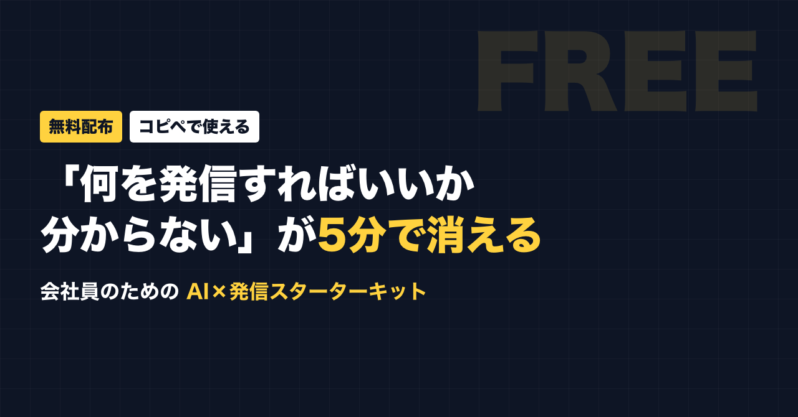
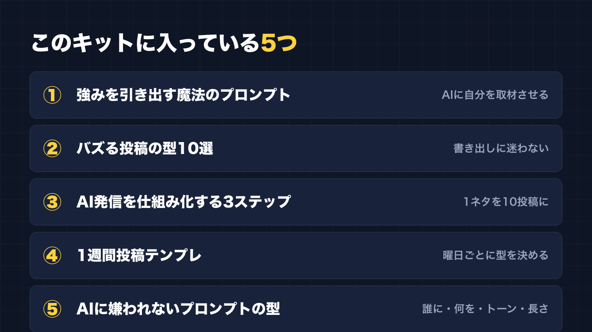
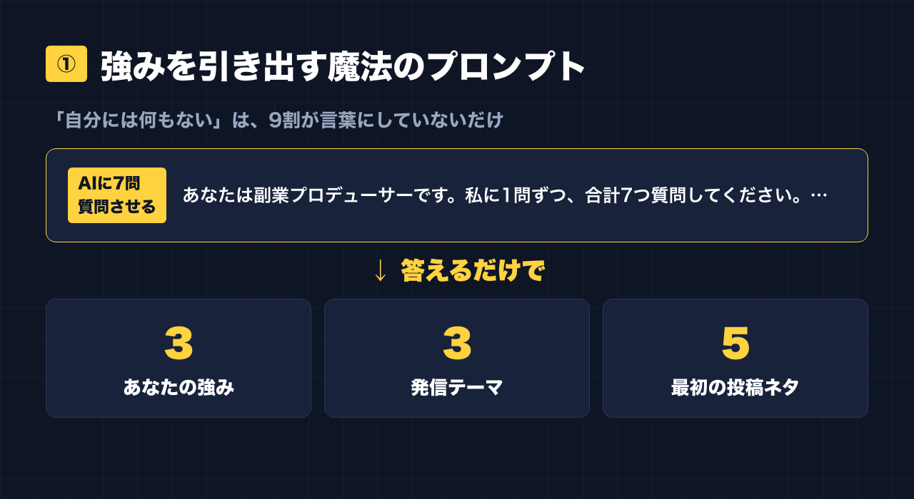
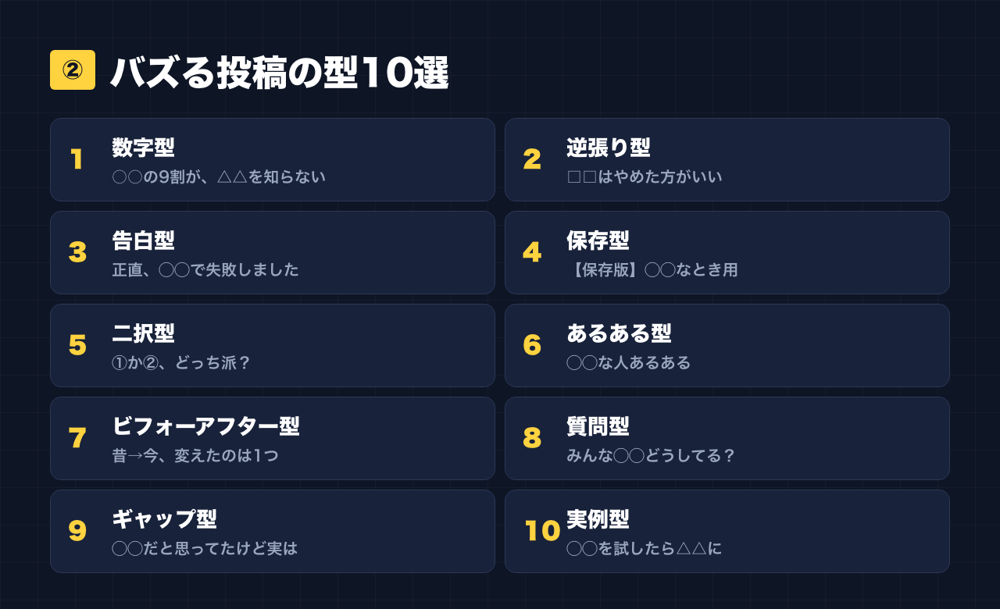
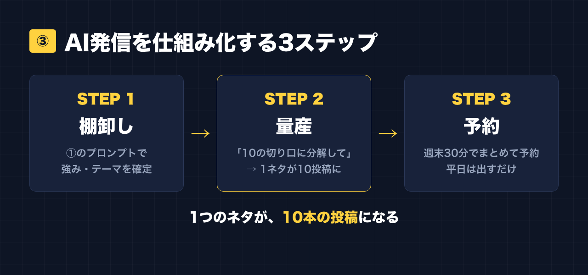
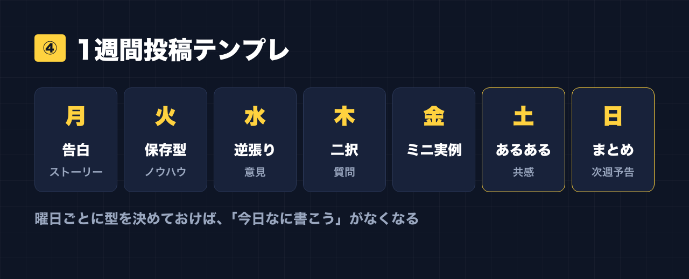
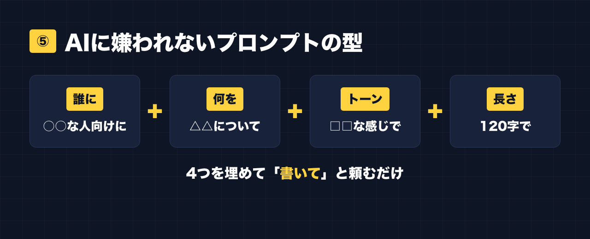
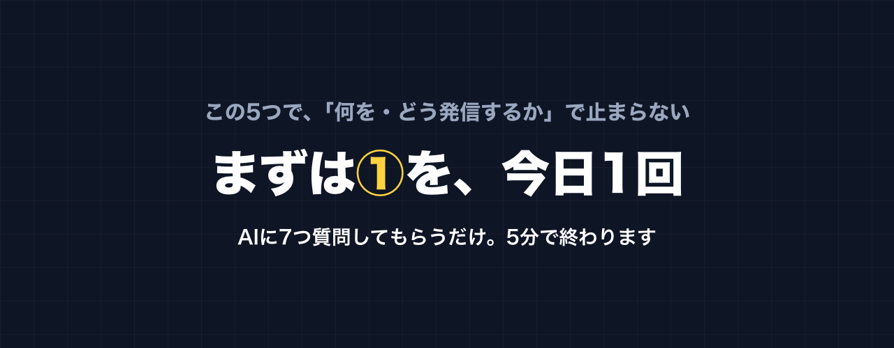

1. タイトルをコピーして、note のタイトル欄に貼る
2. 「本文1をコピー」から順にコピーし、note の本文に貼る
3. 青いラベルの位置に、images フォルダの同じ名前の画像を入れる（本文には貼られません）
※ 見出しが普通の文字になった場合は、その行を選んで「大見出し」を設定してください

「AIで副業を始めたいけど、"何を・どう発信すればいいか"が分からない」
——数年前の私がそうでした。
でも分かったのは、AIは"難しいプロンプト"を覚えるものではなく、"自分のことを話して、質問させる"だけで、発信も副業も一気にラクになるということ。
この記事では、会社員が今日から使える「AI発信スターターキット」を無料で全部公開します。コピペ→自分の言葉を少し足すだけ。まずは①から試してみてください。

① 強みを引き出す"魔法のプロンプト"

「自分には何もない」は、9割が"言葉にしていないだけ"。AIに自分を取材させると、強みは驚くほど簡単に出てきます。
▼AI（ChatGPT / Claude）にそのまま貼る
あなたは副業プロデューサーです。私に1問ずつ、合計7つ質問してください。私の回答から、・私の強み3つ ・発信すべきテーマ3つ ・最初の投稿ネタ5つ を提案してください。まず1問目からお願いします。
② バズる投稿の型10選

1. 数字型：「○○の9割が、△△を知らない」
2. 逆張り型：「□□はやめた方がいい。理由は—」
3. 告白型：「正直に言うと、私は◯◯で失敗しました」
4. 保存型：「【保存版】◯◯なとき用リスト↓」
5. 二択型：「①か②、どっち派？番号で教えて」
6. あるある型：「◯◯な人あるある↓ …図星の人そっと🙋」
7. ビフォーアフター型：「昔→今、変えたのは1つだけ」
8. 質問型：「みんな◯◯ってどうしてる？」
9. ギャップ型：「◯◯だと思ってたけど、実は△△」
10. 実例型：「◯◯を試したら、△△になった話」
③ AI発信を仕組み化する3ステップ

1. 棚卸し：①のプロンプトで強み・テーマを確定
2. 量産：1テーマを「10の切り口に分解して」とAIに頼む → 1ネタが10投稿に
3. 予約：週末30分でまとめて作って予約。平日は"出すだけ"
④ 1週間投稿テンプレ

- 月：告白／ストーリー
- 火：保存型ノウハウ
- 水：逆張り意見
- 木：二択・質問
- 金：ミニ実例
- 土：あるある共感
- 日：まとめ＋次週予告
⑤ AIに嫌われないプロンプトの型

【誰に】○○な人向けに 【何を】△△について 【トーン】□□な感じで 【長さ】120字で 書いて。
おわりに

この5つで「何を・どう発信するか」で止まることは無くなります。まずは①を今日1回試してみてください。
🎁 追加特典＆最新プロンプトは公式LINEで無料配布中
https://lin.ee/RzyA13P
🛠 棚卸し〜下書きまでAIがやるツール「副業ドラフト」も無料で試せます
https://note-threadssf.onrender.com
役に立ったら、スキ＆フォローで応援してもらえると嬉しいです😊